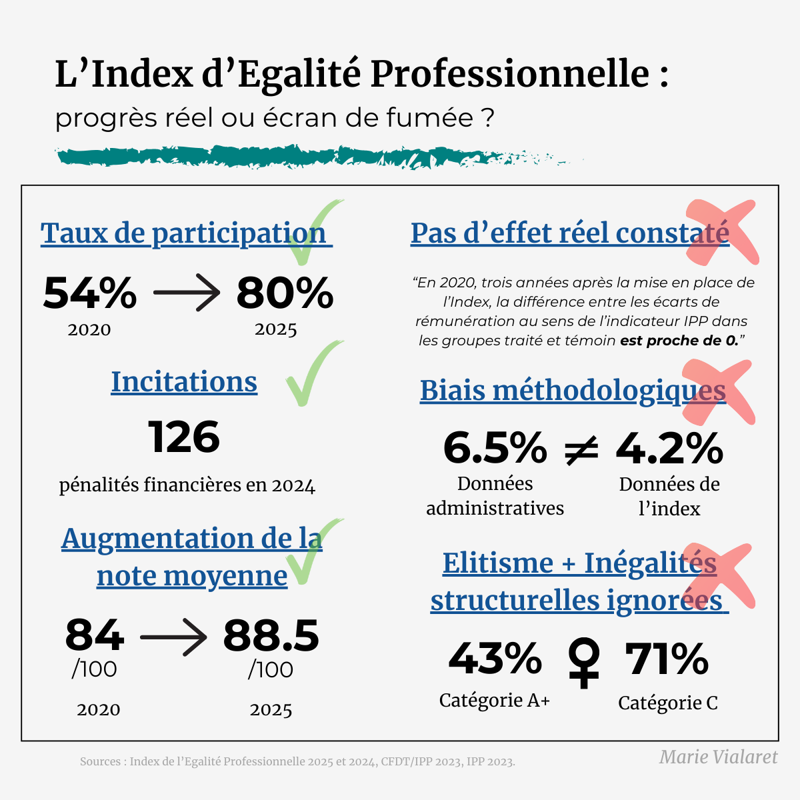

L'indice d'égalité professionnelle : progrès réel ou écran de fumée ?
01 mai 2025
Mis en place en 2019, cet outil visait à mesurer (et corriger) les écarts de rémunération entre femmes et hommes dans les entreprises. Alors quels succès constater en cette Journée Internationale des Travailleur·euses ?
En 2025, on pourrait croire que le pari est réussi :
✅ Transparence accrue : 80 % des entreprises concernées ont publié leur note en 2025, contre 54 % en 2020, ce qui favorise la visibilité des écarts et la responsabilisation des employeurs.
✅ Incitation à l'action : Les entreprises notées sous 75/100 doivent adopter des mesures correctives, sous peine de sanctions financières pouvant aller jusqu'à 1 % de la masse salariale annuelle.
✅ Progression mesurable : La note moyenne a progressé de 84/100 en 2020 à 88,5/100 en 2025, montrant une amélioration continue des pratiques déclarées.
Mais le tableau est à nuancer :
❌ Effet limité sur les inégalités réelles : Selon une étude IPP/CFDT, il n'y a pas d'effet détectable de l'Index à court terme sur la réduction des écarts, même dans les entreprises les moins bien notées.
❌ Biais méthodologiques : L'Index masque des écarts en utilisant des moyennes globales, ne prend pas en compte les temps partiels ou la sous-valorisation des métiers féminisés.
❌ Vision élitiste de l'égalité : L'Index valorise surtout la présence des femmes dans les hauts salaires et l'encadrement, invisibilisant leur surreprésentation dans les bas salaires (71 % de femmes en catégorie C dans la fonction publique).
Conclusion ? L'Index est un outil utile, mais encore incomplet. Il donne des repères, mais pas toute la carte. Il corrige les apparences sans toujours s'attaquer aux racines des inégalités.
☕ Et vous, qu'en pensez-vous ? L'indice d'égalité professionnelle est-il un progrès, ou un écran de fumée ?
Vous aimez les stats qui déconstruisent les idées reçues ?
Abonnez-vous ma liste de diffusion en cliquant sur le bouton ci-dessous ↓
Je m'appelle Marie Vialaret. Je suis présidente de l'association tpà et conférencière sur les questions d'égalité de genre. Statisticienne de formation, je suis consultante indépendante en analyse de données.
Diplômée de la Toulouse School of Economics, j'ai ensuite étudié les statistiques appliquées à l'ENSAE ParisTech.